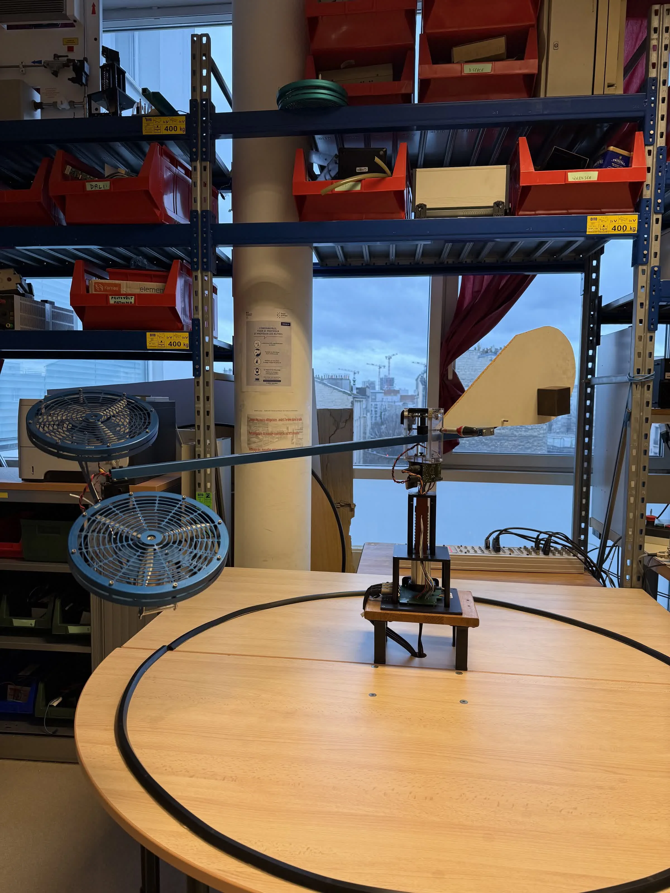

// CONTROL ENGINEERING · EXPERIMENTAL IDENTIFICATION
Digital Control of a Laboratory Bicopter
Identifying the elevation dynamics of a real test rig, then designing a discrete state-feedback controller with integral action.
01 · MISSION
Control one unstable-looking motion from measured data
The study isolates the elevation axis of a twin-rotor laboratory helicopter. A voltage step reveals the plant dynamics; the measured response is converted into a second-order state-space model and then into a digital controller ready for real-time implementation.
02 · EXPERIMENTAL SETUP
From motor voltage to elevation angle
Simulinkcontrol law
dSPACEreal-time I/O
Twin motorsU = Ud + Ug
Angle sensorelevation ε(t)
03 · SYSTEM IDENTIFICATION
Reading a second-order model from the real response
Identified plant
K = 0.294
A = [ 0 1
−0.66097 −0.17919 ]
B = [ 0
0.19432 ]
A compact continuous model captures the measured elevation dynamics before discretization.
04 · DIGITAL STATE FEEDBACK
Adding integral action and relocating the dynamics
MATLAB · ACKER
Final controller gains
Kp115.205
Kp214.038
Ki0.42393
Desired discrete poles
0.95
0.95 ± 0.04j
The integral state removes steady-state error while pole placement sets the closed-loop dynamics within the 50 ms sampling constraint.
A complete model-to-controller workflow
Experimental data, dynamic modeling, discretization, controllability and pole placement were connected in one reproducible control-design chain for the elevation axis.
MATLAB / SimulinkdSPACEControlDeskState-spacePole placement
PROJECT DOCUMENTATION
Download Full Report (FR)
Read the complete control study
The experimental identification, equations and controller synthesis are documented in French.